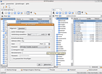

FTP
Zum Verständnis dieses Artikels sind folgende Seiten hilfreich:
Dieser Artikel listet Programme für das File Transfer Protocol (FTP) und FTP-fähige Dateimanager auf. Mit diesen Anwendungen können Daten auf FTP-Server geladen bzw. Daten heruntergeladen werden. Üblicherweise lädt man z.B. Webseiten per FTP auf einen Webserver hoch.
Übertragung über FTP sind komplett unverschlüsselt. Eine verschlüsselte Alternative ist SFTP, welches Teil von SSH ist. Viele FTP-Programme unterstützen ebenfalls SFTP.
Innerhalb des jeweiligen Abschnitts sind die Programme alphabetisch aufgelistet.
Dateimanager¶
Prinzipiell ist es nicht zwangsläufig notwendig, ein FTP-Programm zu installieren. Die Dateimanager der großen Desktop-Umgebungen GNOME und KDE können von Haus aus mit "entfernten Dateisystemen" umgehen. Die Dateimanager kommen sicherlich nicht an die Leistungsfähigkeit eines reinen FTP-Clients heran. Wer jedoch nur ab und zu Daten per FTP verschiebt, braucht kein extra Programm zu installieren.
GNOME/Ubuntu¶
Der Dateimanager Nautilus der GNOME-Desktopumgebung kann von Haus aus mit zahlreichen Netzwerkprotokollen umgehen. Natürlich beherrscht er auch FTP.
KDE/Kubuntu¶
Unter Kubuntu kann man von jeder Anwendung heraus eine ftp-Verbindung zu einem Server aufbauen. Man gibt in der Adressleiste der Anwendung einfach
ftp://BENUTZERNAME@DOMAINNAME
ein. Anschließend erscheint ein Fenster, in dem man seine Zugangsdaten eingeben kann. So lassen sich zum Beispiel mit Kate erstellte Dateien direkt vom Server laden oder auf ihm speichern, genauso ist der Zugriff mit Dolphin möglich, so dass bequem Dateien verschoben, kopiert oder gelöscht werden können.
bareFTP¶
bareFTP  ist ein FTP-Client für GNOME, der auf Mono aufbaut (ab Ubuntu 12.04 muss Mono zuerst nachinstalliert werden). Das Programm unterstützt unter anderem die folgenden Protokolle: FTP, FTPS, SSH. Es lässt sich direkt aus den Paketquellen von Ubuntu installieren [1]:
ist ein FTP-Client für GNOME, der auf Mono aufbaut (ab Ubuntu 12.04 muss Mono zuerst nachinstalliert werden). Das Programm unterstützt unter anderem die folgenden Protokolle: FTP, FTPS, SSH. Es lässt sich direkt aus den Paketquellen von Ubuntu installieren [1]:
bareftp (universe)
 mit apturl
mit apturl
Paketliste zum Kopieren:
sudo apt-get install bareftp
sudo aptitude install bareftp
CrossFTP Client¶
CrossFTP ist ein einfach zu bedienender, auf Java basierender, plattformunabhängiger FTP-Client. Daher muss zuerst eine Java-Laufzeitumgebung (JRE) installiert werden.
Online-Nutzung¶
 Statt der nachfolgend beschriebenen Installation auf dem eigenen Rechner kann man auch Java Web Start für CrossFTP verwenden: crossftp.jnlp
Statt der nachfolgend beschriebenen Installation auf dem eigenen Rechner kann man auch Java Web Start für CrossFTP verwenden: crossftp.jnlp  . Dann nutzt man automatisch immer die neueste Version.
. Dann nutzt man automatisch immer die neueste Version.
Alternativ kann man CrossFTP aus einem Terminal [3] über den Befehl:
javaws http://www.crossftp.com/crossftp.jnlp
starten. Den Befehl kann man auch als Programmstarter verwenden. Sollte man CrossFTP häufig benutzen oder die Anwendung im Intranet zur Verfügung stellen wollen, so sollte man es in Betracht ziehen, CrossFTP auf einem eigenen Webserver zur Verfügung zu stellen. Dazu gibt es auf der Downloadseite eine portable Version. Dieses Archiv muss im Document-Root eines Webservers entpackt werden und kann dann, wie oben beschrieben, lokal gestartet werden.
Installation¶
CrossFTP kann auch lokal installiert werden. Auf der Downloadseite wird ein Fremdpaket im .deb-Format angeboten.
Hinweis!
Fremdpakete können das System gefährden.
FileZilla¶
FileZilla ist ein schneller FTP und SFTP Client mit sehr vielen Features. Er unterstützt unter anderem die Wiederaufnahme abgebrochener Datentransfers, die Verwaltung verschiedener FTP-Sites, SSL, Drag&Drop und eine Menge mehr. Die Anwendung läuft nach der Installation in der systemweit eingestellten Sprache.
Der FileZilla-Client speicherte die Anmeldedaten (Benutzername und Passwort) bis Version 3.26 unverschlüsselt auf der Festplatte, sodass diese leicht durch Dritte oder durch Schadsoftware ausgespäht werden konnten. Dafür wurde FileZilla von Nutzern häufig kritisiert. Mit der Version 3.26 haben die Entwickler auf diese Kritik reagiert und das Programm mit einer Master-Passwort-Funktion nachgerüstet. Diese ist unter Einstellungen zu finden, muss vom Nutzer allerdings in Eigenregie aktiviert werden, siehe Kritik.
FireFTP¶
FireFTP ist kein "richtiges" FTP-Client-Programm: es handelt sich um ein Add-on für den Webbrowser Firefox. Allerdings bietet es zahlreiche Funktionen, die so manches ausgewachsene FTP-Programm in den Schatten stellen. So können beispielsweise Verzeichnisse verglichen und synchronisiert werden.
Seit Firefox 57.0 (Quantum) ist FireFTP als Add-on nicht mehr möglich, der Entwickler hat nach 13 Jahren und 25 Mill. Downloads die Entwicklung eingestellt . Wer FireFTP nutzen möchte, kann es nur mit einer älteren FF-Version tun.
FireFTP  kann sehr einfach installiert werden. Wie bei allen Firefox Add-ons üblich, muss der Browser nach der Installation neu gestartet werden. Danach findet man im Browser unter
kann sehr einfach installiert werden. Wie bei allen Firefox Add-ons üblich, muss der Browser nach der Installation neu gestartet werden. Danach findet man im Browser unter
"Extras -> FireFTP"
den Eintrag für FireFTP.
gFTP¶
gFTP ist ein FTP-Client, welcher auf GTK+ aufbaut. Das Programm unterstützt unter anderem die folgenden Protokolle: FTP, HTTP, HTTPS, SFTP und FSP. Es lässt sich direkt aus den Paketquellen von Ubuntu installieren.
KFTPGrabber¶

KFTPGrabber ist ein einfach zu bedienender FTP-Client für die Desktop-Umgebung KDE. Er fügt sich aber auch gut in GNOME ein. KFTPGrabber kann schon mit der Grundinstallation FTP über TLS/SSL (explizit/implizit) und SFTP über SSH2.
Terminal¶

ftp¶
Mit ftp gibt es ein sehr leistungsfähiges, textbasiertes Programm für die Kommandozeile. ftp ist normalerweise in der Standardinstallation von Ubuntu enthalten, kann ansonsten aber über das folgende Paket nachinstalliert [1] werden:
ftp
mit apturl
Paketliste zum Kopieren:
sudo apt-get install ftp
sudo aptitude install ftp
Der Aufruf erfolgt im Terminal [3] mit:
ftp SERVERNAME_oder_IP
Nach Eingabe von Benutzername und Kennwort (Angaben in <...> variieren):
Connected to <SERVERNAME> 220 <Server-Version> ready. Name (<auf SERVERNAME>): <BENUTZERNAME> Password: ******** 230- 230 Logged in as <BENUTZERNAME> Remote system type is UNIX. Using binary mode to transfer files. ftp>
steht ein interaktiver Prompt zur Verfügung. Gibt man "help" ein, erhält man eine Befehlsübersicht. Wer mehr über die Nutzung von ftp erfahren möchte, der sollte die sehr ausführliche Manpage lesen.
mc¶
Der Dateimanager Midnight Commander kann ebenfalls FTP-Verbindungen aufbauen. Die Eingabe der Zugangsdaten folgt diesem Schema:
/#ftp:BENUTZERNAME:PASSSWORT@FTPSERVER.DE
sitecopy¶
sitecopy synchronisiert zwei Verzeichnisse, wobei immer komplette Dateien übertragen werden. Dateien, die im Quellverzeichnis nur verschoben wurden, werden auch im Zielverzeichnis nur verschoben und nicht neu angelegt.
wput¶
wput ist ein Uploadmanager der sich an wget orientiert und hervorragend geeignet ist, wenn man in Skripten Dateien auf FTP-Server laden möchte oder eine einfache Möglichkeit sucht, ein Verzeichnis rekursiv hochzuladen.
Problembehebung¶
Links¶
Deutsche Einführung zu ftp
- Beschreibung der Kommandozeilenversion, Auszug aus dem Buch "Linux - Wegweiser zur Installation & Konfiguration" Englische Einführung zu ftp
- Befehlsübersicht und einige Beispiele zu FTP FTP-Client Filezilla
- LinuxUser 04/2008
- Erstellt mit Inyoka
-
 2004 – 2017 ubuntuusers.de • Einige Rechte vorbehalten
2004 – 2017 ubuntuusers.de • Einige Rechte vorbehalten
Lizenz • Kontakt • Datenschutz • Impressum • Serverstatus -
Serverhousing gespendet von